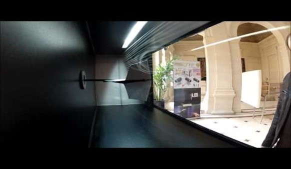

5 mai 2023
Une soufflerie est une installation permettant d’analyser l’écoulement de l’air autour d’un objet afin d’étudier notamment l’aérodynamisme et la résistance des matériaux dans des conditions se rapprochant de la réalité. Ce système est très utilisé en aéronautique et spatial car l’étude de l’écoulement de l’air est primordiale. En effet, pour permettre à un avion de voler, il faut avoir testé de nombreux paramètres aérodynamiques dans le but de maximiser la portance, de minimiser la traînée, d’estimer à quel moment l’avion est en situation de décrochage ou encore de tester les limites de l’avion pour qu’il ne se désintègre pas. Ce travail en soufflerie peut être mis en parallèle avec des méthodes numériques comme Joukovski (“lien vers la page Joukovski du site ou publication Instagram”)
En effet, les tests en souffleries sont effectués à la suite d’analyses sur ordinateur afin de vérifier si les données informatiques se concrétisent bien dans la réalité. C’est donc une illustration de l’étude des fluides numérique.
Voici un exemple de soufflerie en fonctionnement. D’un côté, des ventilateurs aspirent l’air. De l’autre, un filtre a été placé sur l’ensemble de l’entrée d’air. Au centre de cette entrée d’air, un tube a été placé verticalement. Ce tube est troué tout le long et de la fumée, permettant de visualiser les lignes de courant, est injectée à travers ces trous. Ici, le flux d’air est laminaire, c’est à dire que les lignes de courant sont parallèles les unes aux autres et ne s’entrecoupent pas. Elles sont ensuite déviées par la présence d’objets placés au milieu du banc d’essai de la soufflerie. On mesure dans un premier temps visuellement puis avec des outils de mesures ou des capteurs (selon les souffleries), les mouvements et variations des lignes de courant. Ainsi, une soufflerie permet de réaliser des tests dans des circonstances réelles de déplacements pour optimiser les performances d’un avion en aéronautique par exemple.
Afin de fonctionner, notre soufflerie est composée de cinq éléments (principaux) que nous allons vous présenter :
- L’arrivée d’air (à droite sur la première photo) : section élargie où l’air rentre.
- La veine d’essai (au centre) : section plus petite que l’entrée d’air afin d’accélérer l’air. On y met, grâce à une trappe située en dessous, les différentes maquettes pour analyser leurs propriétés aérodynamiques. Cette partie est peinte en noir (à l’intérieur) dans le but de mieux visualiser les lignes de courant par une vitre lorsque l’on utilise la machine à fumée.
- Les ventilateurs (seconde photo) : ils sont situés entre la sortie et la veine d’essai et permettent à l’air de circuler dans la veine d’essai en l’aspirant.
- Le circuit électronique avec interrupteur : il permet d’allumer et éteindre la soufflerie.
- La sortie d’air (à gauche) : section élargie permettant à l’air de sortir. L’entrée d’air, la veine d’essai et la sortie d’air sont liées grâce à un système d’accroche afin d’être démontés et de faciliter le transport de la soufflerie. Le fonctionnement de la soufflerie est donc assuré par ces composantes, cependant, il reste la partie la plus importante mais aussi la plus délicate qui est celle qui permet d’assurer un flux laminaire dans la soufflerie. C’est à cette partie qu’est dédiée la section suivante.
Pour qu’une soufflerie fonctionne, il faut avoir un flux laminaire. Mais qu’est-ce qu’un flux laminaire ? C’est lorsque les lignes de courant se déplacent parallèlement les unes aux autres en ligne droite. Lorsque ce n’est pas le cas, alors le flux d’air est dit turbulent. Une soufflerie fonctionne grâce à un flux laminaire qui permet d’observer des changements des lignes de courant en passant autour de l’objet étudier et ainsi, mieux comprendre l’aérodynamique et l’améliorer. Afin de pouvoir observer ces flux, on injecte de la fumée sur certaines lignes de courant pour visualiser le flux. Nous allons vous présenter quelques techniques utilisées pour obtenir un flux laminaire : Réseau de pailles.
Nous avons commencé en utilisant un système constitué de pailles. Nous disposions d’un réseau en forme de cercle que nous avons transformé en plusieurs lignes de pailles que nous avons ensuite solidifié entre elles afin d’avoir une forme carrée :
Cette technique est beaucoup utilisée dans les souffleries amateures et le résultat est plutôt intéressant. Pour effectuer d’autres tests, nous avions aussi bouché certaines pailles afin d’espacer les lignes de courant et, ainsi, mieux les discerner. Cette proposition n’est pas nécessairement la plus pertinente car notre problème concerne plus la répartition de la fumée avant le passage dans les pailles. En effet, lorsque la fumée est placée proche du réseau de pailles à un endroit précis, le résultat est proche de celui souhaité. Les flux sont plutôt laminaires et parallèles avant de se mélanger quelques centimètres après leur passage dans le réseau de paille.
En plaçant le système de pailles à l’entrée de la soufflerie, on voit que le flux d’air semble laminaire à la sortie des pailles mais redevient turbulent quelques centimètres plus loin dans la soufflerie.
Le système de paille étant réalisé à la main et à l’aide de pailles n’ayant pas toujours la même longueur ou tout à fait le même diamètre, l’idée du réseau de pailles a été reprise et la fabrication en impression 3D de structures en nid d’abeilles a été lancée. Visuellement, l’approche semble être la bonne mais l’impression 3D pose un souci majeur. Le matériau utilisé lors des impressions 3D est abrasif et accroche l’air. C’est justement l’inverse qui permet à la soufflerie de fonctionner. Ce n’est pas, à ce jour, la solution à privilégier car on obtient un nuage de fumée directement après le passage de la fumée à travers les structures en nid d’abeille.
Notre idée suivante est un peigne à fumée. Nous avons observé l’utilisation de ce système dans d’autres souffleries de taille similaire à la nôtre. Nous l’avons modélisé et aurions souhaité l’usiner. Afin de le tester dans un premier temps, nous l’avons nous-même fabriqués. Celui-ci est un tube principal en PVC (d = 32mm) troué sur la verticale où on place des tubes horizontaux en laiton (d = 6mm). Pour le tester, nous l’avons placé dans la trappe qui nous permet de mettre l’objet à étudier. Nous allons vous présenter les résultats par la suite mais ceux-ci sont perturbés par le fait que nous n’avons pas encore un moyen adapté d’intégrer le peigne à fumée dans la soufflerie. Concernant les résultats, nous ne sommes pas satisfaits mais cela reste tout de même encourageant. En effet, notre soufflerie n’étant pas tout à fait hermétique quand on y insère le peigne pour le moment, le flux est turbulent quelques centimètres après être sorti des tubes. Une de nos idées d’amélioration serait de créer une quatrième partie pour la soufflerie, elle aussi, assemblée avec les autres grâce au même système d’accroches que celui existant. Cette quatrième partie serait entièrement dédiée à l’obtention d’un flux laminaire. Nous sommes assez contraints par le matériel actuel et souhaitons, avec cette nouvelle partie, être plus libres dans nos idées et améliorer leur efficacité.